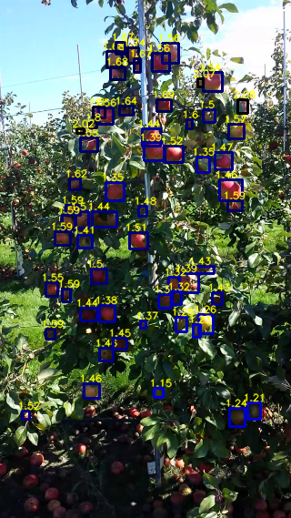

Juan Felipe
Jaramillo·Hernández
ML / Software / Electronics Engineer · Computer Vision Researcher
I build vision systems that see depth — from YOLO-based detectors on microcontrollers to the anomaly-detection pipeline behind Aimira. PhD candidate at UPV, inventor of the Depth Object Detector.
Depth Object Detector — a detector that also regresses metric depth.

A lightweight, state-of-the-art convolutional detector (~1M params) that integrates depth estimation directly inside the YOLO prediction heads. Each detection tensor carries an extra output that regresses depth jointly with the bounding box and objectness — derived end-to-end through an augmented objective function. Built for fruit-harvesting and phenotyping on low-cost, resource-constrained edge devices.
Repositories
Publications
ORCID 0000-0002-0992-1346 · VALGRAI / Universitat Politècnica de València
Stack
Path
Album
Hexagonal architecture
This page is the domain core. It depends only on ports (contracts) — never on concrete IO. Each adapter implements a port and is swappable without touching anything else. Want a photo album, a CV gate, a blog? Write one adapter and register it. (see core.js)
shell depends on ports only
CuratedAdapter (fallback)
ServerGate → your API
Smtp / Formspree → plug
Cloudinary / S3 → plug
core.modules.push({
id:'talks', label:'Talks',
source: new TalksAdapter()
});
Let's build something
One ping away — open to research collaboration, vision / edge-AI consulting, and engineering roles. Pick a channel, or take the whole CV.
Writing
Papers I'd hand you
not mine — the work that shaped how I think about vision & language
5 entries · curated · class ∈ {CV, NLP}